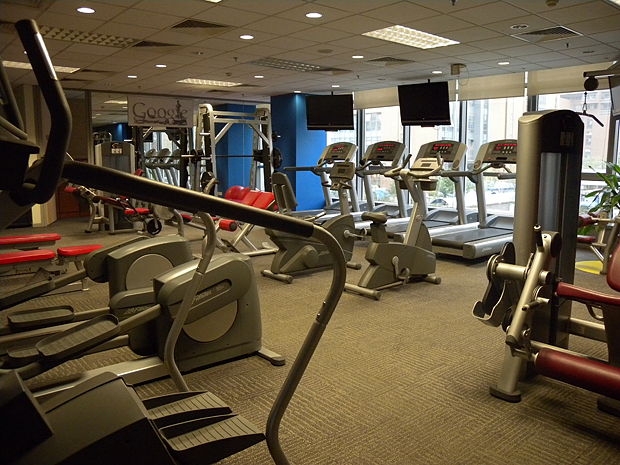
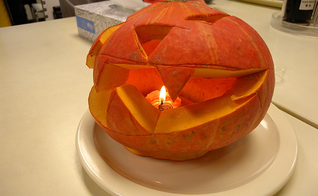

谷歌游已是蓄谋已久，乐乐也是好几次邀请我过去，而且强调要中午过去，可以品尝传说中的Google大餐。可惜一直没找到合适的时机。昨天公司五周年，正好放假一天，逮着机会就去了。

谷歌前台，坐在一侧沙发上等乐乐，偷偷拿出相机拍，没敢正面照。不知从哪儿传出断断续续恐怖的呜呜声，开始还不知道是啥，后来才发现餐厅门口摆着几个万圣节的玩偶，声音就是从那儿发出来的。

谷歌健身房，这会儿正是饭点，所以没有人。

谷歌游戏厅。两个人在玩台球。另一侧是一大排零食，有各种巧克力，威化饼，饼干和水果。可惜这会儿每个框里都已经所剩无几。

这样装饰的办公室，让人想起婚礼。据说这里是每个来访游客的必拍地。果然Adwords部门还是女生多啊。听说以前谷歌办公室还有主题日，什么婚纱日，睡衣日之类的，每个人都必须穿结婚礼服或者睡衣来上班。旁边的照片墙上就有以前睡衣日的盛况，为了保护隐私，照片墙就不放上来了:)

真是来得早不如来得巧，今天正好赶上谷歌食堂为万圣节装饰一新。到处挂着万圣节的玩偶，每张餐桌上都放着一枚南瓜灯。自助餐也是特别丰盛，除了日常的中西餐，各色甜点，水果，沙拉，还有火鸡腿肉和大闸蟹。这趟谷歌万圣游真是不虚此行啊！

哈哈，餐桌上的南瓜灯。顺便祝看到这篇日志的朋友万圣节快乐啦！最后要再次感谢乐乐的盛情款待，知道你是经常来这儿潜水的，嘿嘿:)